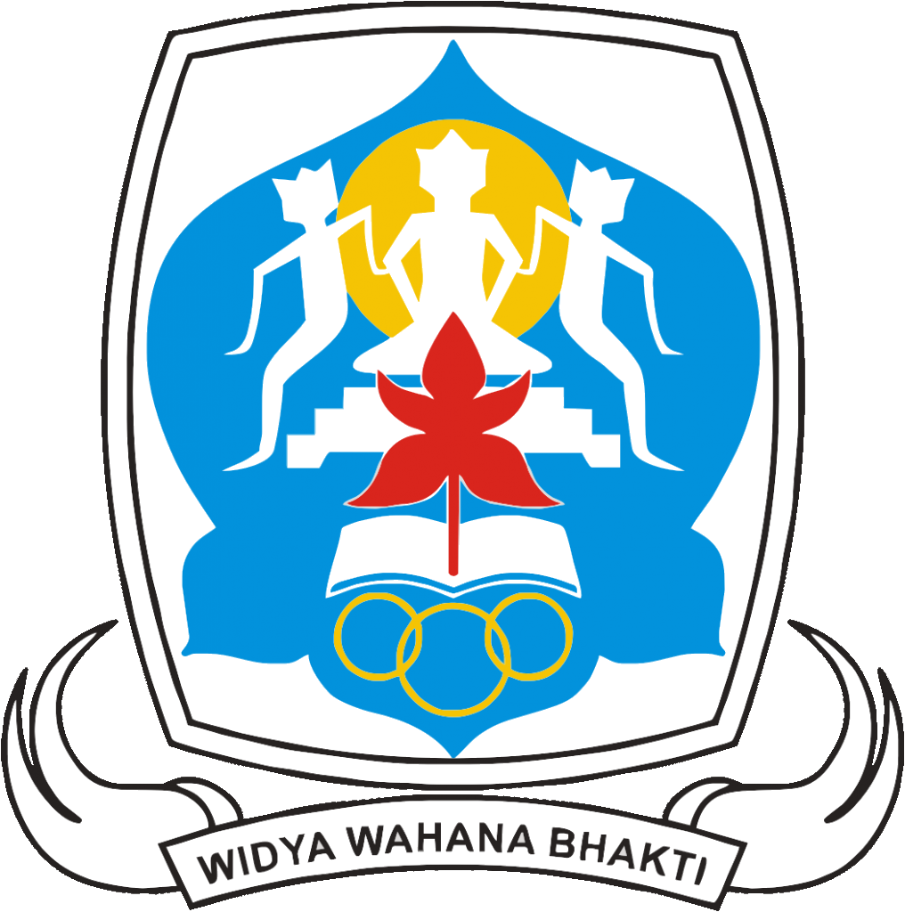

📄 KOP SMAN 1 Gianyar
📄 A4 Portrait
📜 A4 Landscape
📑 Keduanya (2 Hal)
🖨️
Cetak / Simpan PDF
A4 PORTRAIT (210 × 297 mm)
ᬧᭂᬫᭂᬭᬶᬦ᭄ᬢᬄᬧ᭄ᬭᭀᬧᬶᬦ᭄ᬲᬶᬩᬮᬶ
PEMERINTAH PROVINSI BALI
᭞ᬏᬲ᭄ ᬏᬫ᭄ ᬅ᭞ ᬦᭂᬕᭂᬭᬶ ᭞᭑᭞ ᬕ᭄ᬬᬜᬃ
SMA NEGERI 1 GIANYAR
ᬚᬮᬦ᭄ᬭᬢ᭄ᬦᬢᭂᬕᬮ᭄ᬢᬸᬕᬸᬕ᭄ᬬᬜᬃ᭞᭘᭐᭕᭑᭑᭞ᬢᬾᬮᬾᬧᭀᬦ᭄:(᭐᭓᭖᭑)᭙᭔᭓᭐᭓᭔
Jalan Ratna, Tegal Tugu Gianyar (80511), Telepon : (0361) 943034
Laman : www.sman1-gianyar.sch.id, Pos-el : sman1.gianyar1963@gmail.com
NPSN. 50102079

✍️
[Area Isi Surat Resmi / Dokumen A4 Portrait]
A4 LANDSCAPE (297 × 210 mm)
ᬧᭂᬫᭂᬭᬶᬦ᭄ᬢᬄᬧ᭄ᬭᭀᬧᬶᬦ᭄ᬲᬶᬩᬮᬶ
PEMERINTAH PROVINSI BALI
᭞ᬏᬲ᭄ ᬏᬫ᭄ ᬅ᭞ ᬦᭂᬕᭂᬭᬶ ᭞᭑᭞ ᬕ᭄ᬬᬜᬃ
SMA NEGERI 1 GIANYAR
ᬚᬮᬦ᭄ᬭᬢ᭄ᬦᬢᭂᬕᬮ᭄ᬢᬸᬕᬸᬕ᭄ᬬᬜᬃ᭞᭘᭐᭕᭑᭑᭞ᬢᬾᬮᬾᬧᭀᬦ᭄:(᭐᭓᭖᭑)᭙᭔᭓᭐᭓᭔
Jalan Ratna, Tegal Tugu Gianyar (80511), Telepon : (0361) 943034
Laman : www.sman1-gianyar.sch.id, Pos-el : sman1.gianyar1963@gmail.com
NPSN. 50102079
📊
[Area Tabel / Lampiran / Piagam / Dokumen A4 Landscape]